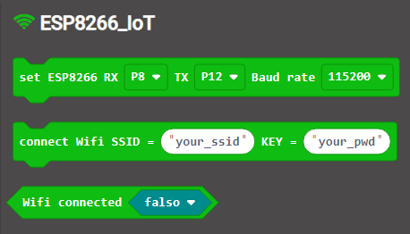

SSID
Un SSID (Service Set Identifier o, en español, identificador de red) es el nombre público de una red de área local inalámbrica (WLAN, Wireless Local Area Network) que sirve para diferenciarla de otras redes inalámbricas en la zona.
Para que te quede más claro, es el nombre de la red que se muestra en la lista de redes disponibles que aparecen cuando quieres conectarte con tu dispositivo móvil a Internet por WIFI.
De hecho, todos los dispositivos inalámbricos que se conectan a una red determinada deben utilizar el mismo SSID que es el que identifica la red. De esto se deduce que, cuando se quiere impedir que un dispositivo inalámbrico desconocido se conecte a una red, una primera medida es ocultar la presencia de la red inalámbrica mediante la inhabilitación de la difusión del SSID. Esto se puede hacer entrando en la configuración del router.
Cargar extensión en MakeCode
Para acceder a los bloques de programación de determinados dispositivos, a veces es necesario disponer de bloques adicionales a los que contempla por defecto MakeCode. Es por ello, que en el apartado "avanzado" de las categorías de bloques, aparece la opción de cargar extensiones.
Para Internet de las cosas, necesitarás cargar la extensión "Environment and Science IoT Kit for Micro:bit" que te sumará bloques para la configuración de la conexión a Internet, el acceso a algunas plataformas IoT y para la lectura de varios sensores. Además, también incorpora bloques para gestionar el reloj de la placa y una pantalla de visualización.
Puedes ver todo el proceso seguido en la siguiente imagen.

Bloques para conectarse a Internet
Dentro de las categorías de bloques adicionales cargados para gestionar la programación de los dispositivos IoT conectados a la nube, hay una primera, llamada ESP8266_IoT, que permite definir la conexión a Internet del sistema.

Con los bloques que se muestran en la imagen anterior se define a qué red se va a realizar la conexión inalámbrica, tal como puedes ver en la siguiente imagen.
Te explico:
Con el evento "al iniciar" se definen en primer lugar los pines de recepción (RX) y de transmisión (TX) y la velocidad de símbolo (o baud rate), medida en baudios. Estos parámetros vienen establecidos por defecto para la placa IoT:bit que has visto antes.
Después se coloca el bloque que determina a qué red se va a realizar la conexión inalámbrica, por lo que hay que poner el SSID de la red y la "contraseña de la WIFI".
Adicionalmente, si se quiere comprobar que existe conexión, se puede definir un evento (por ejemplo, al presionar el botón A de la placa Micro:bit) que compare si la WIFI está o no conectada, para lo que se configura que muestre una imagen en la matriz de leds para cada caso.
Bloques para conectarse a ThingSpeak
Una vez en Internet, hay que conectarse con la plataforma del IoT ThingSpeak para poder transmitir los datos al campo que le corresponda.
Para ello hay una categoría de bloques específica dentro de la categoría de bloques "ESP8266_IoT" cargada anteriormente desde las extensiones disponibles en MakeCode, cuyo contenido puedes ver a continuación en la imagen.
Como puedes observar, los bloques disponibles están ordenados para configurar el vínculo en tres pasos, normalmente dentro de un bucle "por siempre" (para que no se interrumpa el flujo de datos):
- Conectar con ThingSpeak.
- Escribir la clave de escritura que se obtiene de la pestaña de las "claves API" del canal creado en la plataforma y seleccionar el número de campos necesarios para almacenar las lecturas. Se pueden configurar hasta ocho solo con clicar en el signo "más" que aparece en el bloque. Inicialmente estará a cero, pero se les puede introducir un bloque de lectura del sensor definido, tal como se explica en la siguiente página.
- Subir los valores de los campos configurados a la plataforma para que queden registrados.
Finalmente hay otro bloque que, al igual que en el caso anterior, permitiría, por ejemplo, programar una condición para conocer si existe o no conexión con la plataforma.
Bloques de lectura del sensor
Los sensores utilizados suelen ser analógicos y estarán conectados a un puerto que permita la lectura de ese tipo de valores.
A la hora de programar el registro de esos valores en la plataforma IoT, será necesario tomar el bloque que permita la escritura analógica de los mismos.
En la extensión de bloques de MakeCode añadida para la programación del sistema IoT hay una categoría específica, llamada "octopus", para la lectura de algunos tipos de sensores. Estos bloques deberán ser introducidos en el hueco del campo correspondiente.

En caso de no encontrar el bloque del sensor empleado, siempre se puede recurrir a un bloque genérico de escritura en el pin analógico que aparecerá en la categoría avanzada de MakeCode llamada "pines".
Ejemplo
A continuación puedes ver, en la imagen, un ejemplo de la programación de la conexión a la nube de un sensor de ruido conectado al pin número uno de la placa de expansión IoT para Micro:bit, de forma que suba sus datos al campo uno del canal llamado "ruido" de la plataforma ThingSpeak. Además el botón A de Micro:bit comprueba el estado de conexión WIFI y el botón B el de conexión a ThingSpeak.

 .
.
{kind=link}
{kind=link}
{kind=link}
{kind=link}
{kind=link}